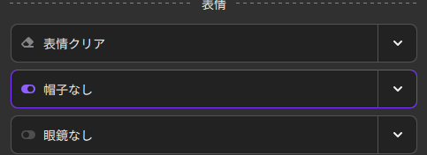
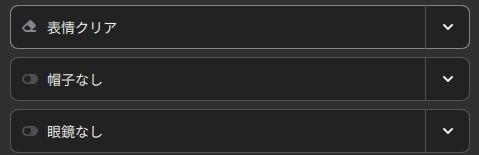
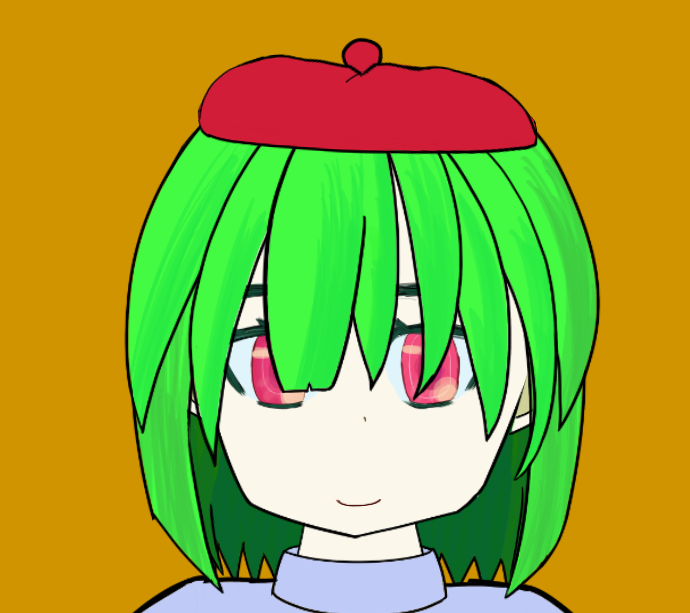
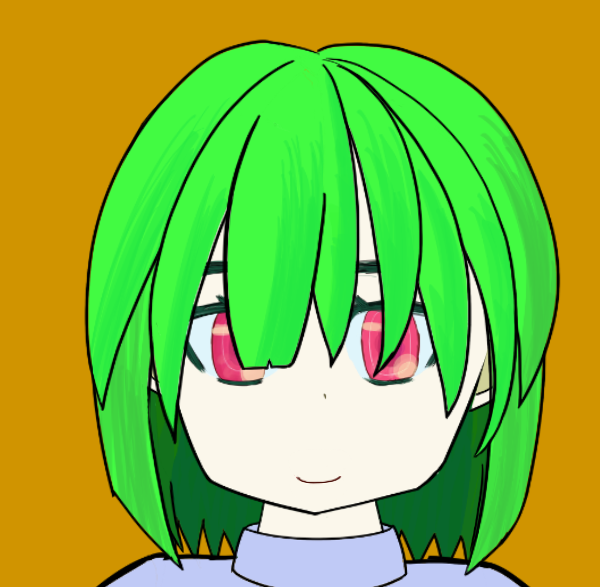

| 作成日 | 2024/12/01 |
| 最終更新日 | 2025/06/06 |
眼鏡と帽子を作ったので表示非表示を切り替えたいなと思いました。
使用しているのは「Live2D」と「nizima LIVE」です。
nizimaからレイヤーのオンオフが直接できるのかと思っていたのですができず。アイテムからできるのかと思いきや別途追加しないといけない様子[1]。もう動きを登録してしまったあとなのでそれもやりたくない……。
知恵袋にて同様の質問をしている方[2]を発見。
質問と回答から考えるに、表情パラメータとして設定するとうまくできそうです。
ということでLive2D側パラメータを追加して、値の変更で透明度を変えられるようにしました。パラメータの追加自体は右下の+マークからできます。
パラメータの追加をしたらnizima側で設定を進めます。
「表情・モーション」から「新規表情作成/カスタムモデル新規編集」を開きます。
設定したパラメータにチェックを入れ、パラメータを変更するように設定します。デフォルトの500msだとゆっくり消えて気になったので50msに変更しました。
設定ができたら、「表情・モーション」でトグルスイッチをオンオフすることでパラメータの変更をワンクリックで行えるようになります。
| ON | OFF |
|---|---|
|  |  |
独立したパラメータで設定すれば、衝突することなく小物のオンオフを切り替えられるようになりました
| 眼鏡 | |||
|---|---|---|---|
| ON | OFF | ||
| 帽子 | ON | ||
| OFF |  |  | |
表情・モーションのパラメータの変更モードで
なるものがあるので調べてみたいです。割と名前から想像できますが。
今後の課題も見つけたとこで、今回はこの辺でおしまいです。